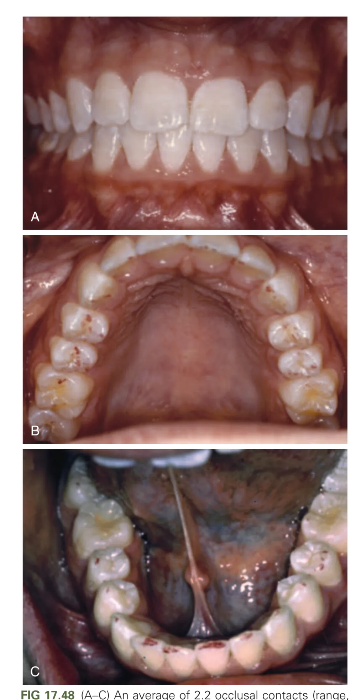
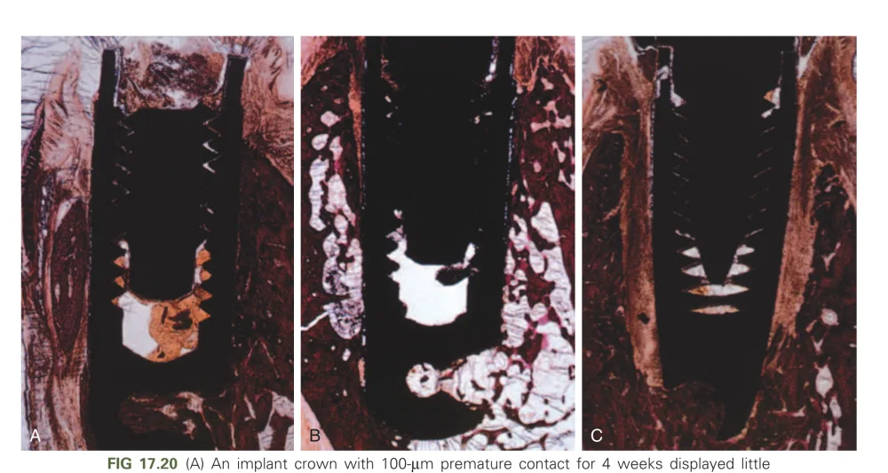

نسخه استخراجشده؛ ترجمه یا تأیید علمی انجام نشده است. وضعیت: captured
اصل دهم IPO میگوید «تماس اکلوزالی ایدهآل». ولی «ایدهآل» یعنی چه؟ پاسخ را دادهها میدهند.
نخست، تنوع در ادبیات: «شمار ایدهآل تماسهای اکلوزالی در ادبیات متفاوت است. تا ۱۵ تا ۱۸ تماس اکلوزالی سهپایهای طراحی شدهاند.» — با ۱۸ تماس روی مولر مندیبل و ۱۵ روی مولر ماگزیلا.
و طرحهای دیگر: «شمار تماسهای اکلوزالی برای مولرها ممکن است به پنج یا شش تماس کاهش یابد، شامل کاسپ غالب (استمپ کاسپ) کاسپهای باکال در مندیبل و کاسپهای لینگوال در ماگزیلا، مارجینال ریجها، و فوسای مرکزی.»
و حالا دادهی طبیعت که همهچیز را عوض میکند:
«میانگین شمار تماسهای اکلوزالی که روی دندانهای خلفی طبیعی افرادی که هرگز توسط دندانپزشک ترمیم یا اکولیبره نشدهاند و هیچ وضعیت پاتولوژیک مرتبط با اکلوژن ندارند مشاهده شده، تنها ۲٫۲ تماس است» — با دامنهی یک تا سه تماس در هر دندان.
۲٫۲ تماس. نه ۱۵ و نه ۱۸.
و نکتهی جالبتر: «اگر دندان یک رستوریشن اکلوزال داشت، شمار تماس اکلوزالی به میانگین ۱٫۶ تماس کاهش مییافت.»
و نتیجهگیری: «شمار تماسهای اکلوزالی روی یک دندان طبیعی ظاهراً میتواند بدون پیامد به یک تا سه ناحیهی تماسی کاهش یابد.»
و صادقانه دربارهی واقعیت بالینی: «وقتی مورفولوژی یک کراون طراحی میشود، معمولاً هیچ فکری دربارهی اینکه چند تماس باید باشد یا کجا باید اکلود شوند نمیشود.» و «تقریباً غیرممکن است که درمانگر شمار و محل تماسهای اکلوزالی را کنترل کند.»
حالا محل — و این سه قاعدهی عملی است:
قاعدهی ۱: «فوسای مرکزی موقعیت منطقی تماس اکلوزالی اولیه است وقتی ایمپلنت در این ناحیه قرار گرفته.» و «تماسهای اکلوزالی اولیهی ایدهآل درون قطر ایمپلنت و درون فوسای مرکزی قرار میگیرند.»
«درون قطر ایمپلنت» — این معیار بسیار دقیقی است. یعنی اگر ایمپلنت ۵ میلیمتر است، تماس باید در محدودهی همان ۵ میلیمتر باشد.
قاعدهی ۲: «تماسهای اکلوزالی ثانویه باید درون ۱ میلیمتری محیط ایمپلنت بمانند تا بارهای ممان کاهش یابد.»
قاعدهی ۳: «تماسهای مارجینال ریج معمولاً باید اجتناب شوند، مگر ایمپلنتها به هم اسپلینت شده باشند.»
و استثنای اسپلینت — که مهم است:
«تماس اکلوزالی مارجینال ریج وقتی میان دو ایمپلنت اسپلینتشده به یکدیگر قرار گیرد، یک بار کانتیلورشده نیست.»
و مزیت افزوده: «افزون بر این، فریمورک فلز/زیرکونیا که ایمپلنتها را اسپلینت میکند، از پرسلن/زیرکونیا در ناحیهی مارجینال ریج پشتیبانی میکند و خطر شکست را به حداقل میرساند.»
و پنج سود اسپلینت: «کراونهای اسپلینتشده نیروهای اکلوزالی وارد بر استخوان کرستال را کاهش میدهند، شل شدن پیچ اباتمنت را کم میکنند، نیروی وارد بر رابط سمان را کاهش میدهند، گیر کراونها را افزایش میدهند، و نیروی وارد بر رابط استخوانـایمپلنت را کم میکنند.»
و نتیجهی عملی: «کراونهای ایمپلنت مجاور اغلب باید به هم اسپلینت شوند، و موقعیت تماس اکلوزالی میتواند از مزیالیترین تا دیستالیترین ایمپلنت گسترش یابد (منهای مارجینال ریجها در دو انتها).»
به قید داخل پرانتز دقت کن — اسپلینت مارجینال ریجهای میانی را ایمن میکند، ولی دو انتها همچنان کانتیلورند.

اصل سوم IPO میگوید «نبود تماسهای زودرس». و این شاید مهمترین اصل عملی کل فهرست باشد.
تعریف: «یک تماس زودرس زمانی رخ میدهد که یک تماس اکلوزالی هنگام بسته شدن، با حرکت و موقعیتیابی طبیعی مندیبل تداخل کند.»
و مهمتر: «مطالعات نشان دادهاند که تماسهای زودرس ممکن است تحلیل استخوان یا شکست ایمپلنت ایجاد کنند.»
و چرا اینقدر مخرب است؟ سه دلیل مستقل:
دلیل اول — استرس: «سطح یک تماس زودرس معمولاً بسیار کوچک است؛ با این حال، بزرگی استرس وارد بر استخوان بهطور متناسب افزایش مییابد (یعنی S = F/A).»
همان معادلهی یونیت اول: سطح کوچک در مخرج، یعنی استرس بزرگ.
دلیل دوم — تمرکز بار: «وقتی یک تماس زودرس رخ میدهد، نیروی اکلوزالی به یک ناحیه اعمال میشود بهجای اینکه میان چند تکیهگاه و دندان تقسیم شود.»
دلیل سوم — نوع نیرو: «افزون بر این، چون تماس زودرس اغلب روی یک سطح شیبدار است، مؤلفهی افقی بار، استرسهای برشی کرستال و مقدار کلی استرس وارد بر کل سیستم ایمپلنت را افزایش میدهد.»
سه دلیل که روی هم جمع میشوند — و به همین دلیل یک تماس زودرس کوچک میتواند اثری نامتناسب داشته باشد.
و آزمایشی که از یونیت پیش میشناسی، اینجا با شکل بالینی میآید:
در یک آزمایش، تماسهای زودرس را روی کراونهای ایمپلنت در میمون (Macaca fascicularis) ارزیابی کردند. استخوان کرستال بهصورت هیستولوژیک برای تماسهای زودرس ۱۰۰، ۱۸۰ و ۲۵۰ میکرومتر در مدت ۴ هفته بررسی شد:
• ۱۰۰ میکرومتر: تغییرات استخوانی اندک
• ۱۸۰ میکرومتر: ۲ تا ۳ میلیمتر تحلیل استخوان کرستال
• ۲۵۰ میکرومتر: نقص V شکل بزرگ اطراف ایمپلنت که به بیش از دو سوم بدنهی ایمپلنت گسترش یافت
و به شکل تحلیل دقت کن — آن را «الگوی V شکل» مینامند. گروه ۱۸۰ میکرومتری «الگوی V شکل تحلیل استخوان بهاندازهی چند میلیمتر» نشان داد. این شکل با تمرکز استرس در کرست همخوان است — همانجا که در درس اول این یونیت دیدی نیروی جانبی ایمپلنت تحمل میشود.
عدد ۱۸۰ میکرومتر را با ۲ تا ۳ میلیمتر تحلیل کنار هم بگذار. کمتر از یکپنجم میلیمتر تماس زودرس، در چهار هفته، دو تا سه میلیمتر استخوان میبرد.
و سختترین دادهی این بخش: آزمایشی دیگر تماسهای زودرس بیشازحد را روی ایمپلنتها در میمونها در دورهی ۲۰ ماهه روی هشت ایمپلنت اینتگرهشده ارزیابی کرد.
«شکست ایمپلنت در شش از هشت ایمپلنت میان ۲ تا ۱۴ ماه رخ داد.»
شش از هشت — یعنی ۷۵ درصد شکست، فقط از تماس زودرس. و دامنهی زمانی هم آموزنده است: از ۲ ماه تا ۱۴ ماه. یعنی این عارضه هم میتواند زود بروز کند و هم دیر — و «یک سال گذشته و مشکلی نبوده» تضمینی نمیدهد.
و آن دو ایمپلنتی که شکست نخوردند چه فرقی داشتند؟ «ایمپلنتهایی که شکست نخوردند تراکم استخوانی بیشتری داشتند و تحلیل استخوان کرستال با فعالیت استئوکلاستیک درون رزوههای ایمپلنتها.»
دو نکته اینجا هست. نخست، تراکم استخوان دوباره بهعنوان عامل محافظ ظاهر میشود — همان الگویی که در کل مسیر دیدهای. دوم، آنها هم بیآسیب نماندند؛ تحلیل کرستال داشتند. یعنی «شکست نخوردن» با «سالم ماندن» یکی نیست.
و فهرست عوارض تماس زودرس روی سیستم ایمپلنت: «خطر بالاتر شل شدن زودهنگام پیچ اباتمنت، شکست پرسلن، شکست بارگذاری زودهنگام، و تحلیل استخوان کرستال.»
و چرا در ایمپلنت بدتر از دندان است:
«یک تماس زودرس روی کراون ایمپلنت از چنین ویژگیهای محافظتی بهره نمیبرد؛ در نتیجه، سیستم ایمپلنت در خطر افزایشیافته است.»
و توصیه: «ارزیابی اکلوزال در CO و MI و تنظیم در صورت نیاز در بیماران ایمپلنت بخشیبیدندان، حیاتیتر از دندان طبیعی است، چون تماسهای زودرس میتوانند به پیامدهای مخربتری روی ایمپلنتها در مقایسه با دندانها بینجامند.»
و حالا زمانبندی — و اینجا یک روش رایج نقد میشود:
«رایجترین روشی که یک درمانگر ایمپلنت برای تعیین زمانبندی تماسهای اکلوزالی هنگام تحویل پروتز ایمپلنت به کار میبرد، پرسیدن از بیمار است: «گاز چطور حس میشود؟ آیا کراون بلند است؟» این تکنیک ایدهآلی برای تعیین اکلوژن ایدهآل بیمار نیست.»
و دلیلش را از درس اول این یونیت میدانی: بیمار برای تشخیص نیروی استاتیک به ده برابر نیروی بیشتر نیاز دارد. پرسیدن از بیمار، پرسیدن از یک حسگر کمحساس است.
پس ارزیابی باید عینی باشد، با شیماستاک (کمتر از ۱۰ میکرومتر): در گاز سبک، هر تماسی روی ایمپلنت برداشته میشود تا دندان طبیعی بار را بگیرد؛ در گاز محکم، شیماستاک میان کراون ایمپلنت و دندان مقابل باید بهسختی بیرون بیاید — یعنی دندان و ایمپلنت همزمان تماس دارند.
